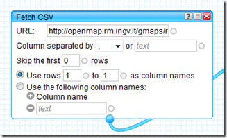
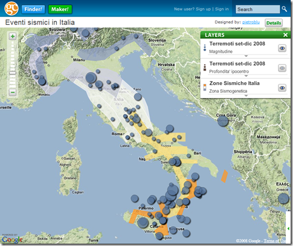
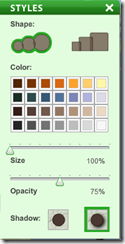

23 novembre, 2010 | di Antonio Falciano
Oggi ricade il trentennale del terremoto del 23 novembre 1980, noto anche come il “terremoto dell’Irpinia” , i cui effetti devastanti colpirono una vasta area dell’Italia meridionale, posta a cavallo delle province di Avellino, Salerno e Potenza, mietendo quasi 3000 vittime.  Tra le immagini indelebili ancora scolpite nella mia memoria di potentino vi è quella dell’orologio del Palazzo del Governo a Piazza Mario Pagano che si è fermato alle 19:34, l’ora esatta in cui la terra ha cominciato a tremare per 90 interminabili secondi. Quel quadrante rotto rappresenta l’emblema di una profonda ferita che ancora oggi non si è rimarginata del tutto.
Tra le immagini indelebili ancora scolpite nella mia memoria di potentino vi è quella dell’orologio del Palazzo del Governo a Piazza Mario Pagano che si è fermato alle 19:34, l’ora esatta in cui la terra ha cominciato a tremare per 90 interminabili secondi. Quel quadrante rotto rappresenta l’emblema di una profonda ferita che ancora oggi non si è rimarginata del tutto.
Trenta anni fa non esisteva ancora il Sistema Nazionale di Protezione Civile, così come lo conosciamo oggi, e si nominò un Commissario Straordinario allo scopo di fronteggiare l’emergenza e coordinare i soccorsi delle popolazioni interessate dal terremoto, che entrò in servizio solamente 24 ore dopo la catastrofe. Gli eventi sismici molto recenti verificatisi in Abruzzo (aprile 2009) e ad Haiti (gennaio 2010), così come altre calamità naturali, dimostrano come la celerità degli interventi durante le prime ore di soccorso sia fondamentale nel salvataggio di vite umane. Una risposta tempestiva e efficiente della Protezione Civile può fare la differenza, ma tutto ciò non può e non deve bastare.
“L’Italia è un paese di santi, poeti, navigatori…” e purtroppo anche di terremoti. Basti pensare che nell’arco di un mese si verificano generalmente diverse centinaia di eventi sismici che interessano la quasi totalità del nostro Paese (si salvano la Sardegna e la penisola salentina), dei quali fortunatamente la maggior parte è percepita solo a livello strumentale e non dalla popolazione. Dobbiamo pertanto saperci convivere proprio come avviene in altri paesi evoluti, come il Giappone o la California, senza farci cogliere del tutto impreparati, come avveniva in passato.
 La comunità scientifica internazionale allo stato attuale non ha ancora individuato un modello attendibile di predizione dei terremoti, pur essendo attivi promettenti filoni di ricerca basati sullo studio dei precursori sismici, anche mediante l’impiego di immagini telerilevate. Premesso ciò, il migliore approccio possibile da seguire consiste nella mitigazione del rischio sismico attraverso la corretta applicazione delle norme sulle costruzioni e l’adozione di criteri costruttivi tali da scongiurare il pericolo di crollo degli edifici, tenendo conto della mappa di pericolosità sismica del territorio nazionale – una delle più avanzate in Europa – e recependo gli studi di microzonazione sismica all’interno degli strumenti urbanistici comunali, in modo da disincentivare il più possibile l’edificazione nei siti potenzialmente oggetto di fenomeni di amplificazione locale. L’insieme di questi strumenti di rilevante importanza preventiva può essere inoltre utilizzato per trasmettere alla popolazione le nozioni di base del rischio sismico, ovvero una maggiore consapevolezza del fenomeno in modo da poterlo affrontare correttamente.
La comunità scientifica internazionale allo stato attuale non ha ancora individuato un modello attendibile di predizione dei terremoti, pur essendo attivi promettenti filoni di ricerca basati sullo studio dei precursori sismici, anche mediante l’impiego di immagini telerilevate. Premesso ciò, il migliore approccio possibile da seguire consiste nella mitigazione del rischio sismico attraverso la corretta applicazione delle norme sulle costruzioni e l’adozione di criteri costruttivi tali da scongiurare il pericolo di crollo degli edifici, tenendo conto della mappa di pericolosità sismica del territorio nazionale – una delle più avanzate in Europa – e recependo gli studi di microzonazione sismica all’interno degli strumenti urbanistici comunali, in modo da disincentivare il più possibile l’edificazione nei siti potenzialmente oggetto di fenomeni di amplificazione locale. L’insieme di questi strumenti di rilevante importanza preventiva può essere inoltre utilizzato per trasmettere alla popolazione le nozioni di base del rischio sismico, ovvero una maggiore consapevolezza del fenomeno in modo da poterlo affrontare correttamente.
Diffondere informazioni scientifiche aggiornate e tali da consentire una conoscenza approfondita del territorio è il miglior strumento per avviare strategie di prevenzione e riduzione dei rischi naturali.
E quale occasione migliore per apprendere questi concetti, se non in tenera età? Assolutamente in questa direzione vanno alcune iniziative dell’INGV (Istituto Nazionale di Geofisica e Vulcanologia) finanziate dal Dipartimento nazionale della Protezione Civile. Mi riferisco in particolare al progetto EDURISK, nato circa una ventina di anni fa ad opera di un gruppo di ricercatori del GNDT (Gruppo Nazionale per la Difesa dei Terremoti, confluito nel 2001 nell’INGV), che coinvolge esperti nel settore dello studio e della riduzione dei rischi naturali, dei vari settori disciplinari attinenti (geologia, sismologia, pericolosità sismica, ingegneria sismica, sismologia storica, psicologia dell’emergenza), uno staff di progettazione educativa proveniente dall’editoria scolastica e multimediale, autori di libri per ragazzi, disegnatori, illustratori, fumettisti ed esperti di didattica. L’obiettivo principale del progetto EDURISK consiste nel mettere in campo i ricercatori, la scuola e tutti i cittadini, coinvolgendoli in un progetto di formazione e scoperta del rischio sismico. In particolare, il frutto di tale iniziativa consiste nella pubblicazione di libri, opuscoli e dvd a supporto del progetto formativo di diffusione delle conoscenze sul rischio sismico e vulcanico (materiale didattico). Il progetto è, inoltre, presente nei principali social network (Facebook, Twitter, Anobii e YouTube). Per ulteriori dettagli, si rimanda direttamente al portale del progetto. Di recente, EDURISK ha prodotto la docufiction “Non chiamarmi Terremoto”, che affronta temi quali la prevenzione, il rispetto per le norme sismiche e i comportamenti corretti da tenere in emergenza. Nel seguito, è possibile visionarne l’anteprima e questo è il sito dell’iniziativa.

D’altro canto, anche lo stesso INGV è presente su Twitter e YouTube. Nel primo caso si tratta di un servizio sperimentale di informazione sui terremoti in Italia (e non solo), mentre il canale su YouTube, molto interessante, prevede periodicamente degli aggiornamenti e la descrizione dell’attività sismica in corso, anche per spiegare alcuni aspetti della ricerca che viene svolta dai ricercatori dell’INGV.
Recentemente, qui su TANTO si scongiurava l’eventualità che il prof. Boschi, presidente dell’INGV, adottasse politiche restrittive sul rilascio dei dati di competenza dell’Istituto. E’ auspicabile, inoltre, che si continui nella direzione già abbondantemente tracciata nella diffusione capillare delle informazioni. Solo così si potrà contribuire efficacemente al raggiungimento di una sempre maggiore consapevolezza e conoscenza del fenomeno terremoto da parte dei ricercatori, dei tecnici e della popolazione.
Posted in Didattica | 4 Comments »
6 settembre, 2010 | di Gerlando Gibilaro
La notizia è di quelle che corre il rischio di passare inosservata:
Terremoti, l’Ingv: «Stiamo pensando di smettere di informare sulle scosse»
Il presidente Boschi: «I nostri dati utilizzati per arrivare a conclusioni che non stanno né in cielo né in terra»
MILANO – L’Ingv sta meditando di smettere di rendere pubblici i dati sui terremoti per evitare che siano travisati. Lo afferma Enzo Boschi, presidente dell’istituto Nazionale di Geofisica e Vulcanologia, commentando il messaggio di Guido Bertolaso al congresso della Società geologica italiana.
Corriere.it del 06 settembre 2010
Ed ancora:
Terremoti, interviene Boschi: “Valutiamo stop alle notizie”
Il direttore dell’Istituto nazionale di Geofisica e Vulcanologia pensa a oscurare il sito e tutti i dati relativi agli eventi sismici in Italia. “Vengono usati per arrivare a conclusioni che non stanno né in cielo né in terra”. Bertolaso aveva parlato di “profeti di sventura”.
ROMA – Niente dati sulle sequenze sismiche a disposizione di tutti sul web, anche quelle inavvertite dalla popolazione. Niente cartine geologiche, storico di eventi 1, niente di niente. Stop alle informazioni.
Repubblica.it del 06 settembre 2010
La notizia in sé pone due ordini di problematiche:
- Il Presidente dell’INGV può decidere autonomamente di precludere l’accesso pubblico ai dati raccolti dall’Istituto?
- Precludere l’accesso pubblico a tali dati corrisponde ad una scelta sensata?
Iniziamo dalla prima delicata questione.
L’Istituto Nazionale di Geofisica e Vulcanologia è stato istituito con il decreto legge n.381 del 29/09/99.
L’art. 2 del detto decreto legge recita:
Art. 2. – Attivita’ dell’INGV
1. L’INGV:
[...]
f) rende disponibili per tutta la comunita’ scientifica i dati raccolti dalle proprie reti di monitoraggio, nazionale e locali.
[...]
Possiamo dire che rientra nella funzione dell’INGV la ricerca, il monitoraggio ma anche la diffusione delle notizie e degli allertamenti sui fenomeni sismici nazionali.
In tal senso sembrerebbe che non sia nella piena e libera disponibilità del Presidente dell’INGV prendere una scelta di tal genere, ovvero quella di oscurare sic ed simpliciter il sito informativo e, quindi, di non rendere pienamente pubblici i dati raccolti.
Eppure una certa lettura del citato articolo (disponibili per tutta la comunita’ scientifica) unitamente al combinato disposto con il DECRETO LEGISLATIVO 24 gennaio 2006, n. 36 (attuativo della direttiva 2003/98/CE relativa al riutilizzo di documenti nel settore pubblico), porterebbe a conclusioni diametralmente e drammaticamente opposte.
In sé la Direttiva Europea aveva lo scopo di liberalizzare l’accesso alle molteplici informazioni prodotte e detenute dalle Pubbliche Amministrazioni (dai dati di tipo economico a quelli scientifici, da quelli geografici ai dati turistici).
Tali informazioni, infatti, sono considerate come un’importante materia prima da utilizzare per i servizi e prodotti a contenuto digitale, tali da poter essere riutilizzati al fine di contribuire alla crescita economica e scientifica ed anche alla creazione di posti di lavoro. “La Direttiva invitava gli Stati membri a favorirne il riuso, incoraggiando gli enti pubblici a rendere disponibili i documenti e le informazioni in proprio possesso, a condizioni eque e trasparenti, a tutti i soggetti interessati al loro riutilizzo“.
Non possiamo dire che il D.L. abbia pienamente incarnato lo spirito della direttiva, anzi…
Se in Italia è vero che vige la legge 241 del 1990 sul procedimento amministrativo, è altresì vero che tale legge assegna il diritto di accesso ai documenti amministrativi solo ed esclusivamente a chi ha una situazione giuridicamente tutelata e collegata al documento richiesto. D’altro canto il Codice dell’amministrazione digitale del 2005 ha obbligato la pubblica amministrazione e rendere disponibili i dati in suo possesso in formato digitale, ma non ha inserito alcun obbligo alla trasparenza.
Eppure ancora oggi in Italia ci si scontra con logiche che non esiteremo a definire aberranti.
Resta quindi da chiarire quale sia realmente il dato pubblico cui tutti hanno diritto di accesso e la cui pubblicazione non può essere arbitrariamente inibita (come i dati sull’inquinamento atmosferico o marino, i dati dell’amministrazione pubblica, i dati sulla sanità, l’anagrafe pubblica degli eletti, etc.) e quali siano, d’altro canto, i meccanismi per tutelare il libero accesso a tali dati.
Qualcosa in Italia si sta muovendo, ad esempio lo statuto della Regione Toscana all’articolo 54 prevede “tutti hanno diritto di accedere senza obbligo di motivazione ai documenti amministrativi, nel rispetto degli interessi costituzionalmente tutelati e nei modi previsti dalla legge”. Il Codice dell’Amministrazione Digitale a partire dal 2005, all’art. 50, ha introdotto un importante principio di disponibilità del dati pubblici disponendo che gli stessi devono essere formati, conservati, resi accessibili e disponibili con l’uso delle ICT.
Quid iuris nel caso di specie?
Il ragionamento che ci sentiamo di sostenere è, sinteticamente, il seguente:
- L’attività dall l’INGV è una attività di rilevanza pubblica, finanziata con denaro pubblico;
- I dati che raccogli l’INGV hanno una rilevanza scientifica e sociale;
- I dati raccolti dall’Ente, pertanto, devono essere resi pubblici ed in formato aperto;
- L’INGV non può arbitrariamente smettere di fornire tali dati, se non attraverso procedure ben definite in accordo con gli altri enti istituzionali competenti (Protezione Civile e Ministeri competenti).
Alcune considerazioni vanno fatte poi a sostegno della libertà di informazione. Asserire che per evitare strumentalizzazioni sia opportuno censurare alla fonte i dati ricorda una ben nota vicenda sulla “necessità” di impedire che le intercettazioni telefoniche possano essere “usate male”. Se una informazione o un dato sono legittimamente resi disponibili al pubblico – e qui stiamo parlando di dati di fondamentale importanza per la pubblica incolumità – è questo stesso che, se li utilizza per sostenere delle tesi, per supportare notizie originali, o finanche per realizzare applicazioni – come abbiamo fatto proprio con i dati INGV noi di TANTO – se ne assume la piena e totale responsabilità.
Attenzione, un conto è la manipolazione del dato, ben altro il suo utilizzo così com’è nell’ambito di contesti anche originali, quali articoli, notizie, applicazioni. Manipolare un dato sui terremoti vuol dire aumentare o diminuire la magnitudo di un sisma, la sua localizzazione, il suo tempo di occorrenza, e chiunque lo facesse sarebbe certamente un criminale. Ma se il prof. Boschi per timore di strumentalizzazioni (magari facendo degli esempi ci aiuterebbe a capire) pensa di risolvere il problema oscurando tutto, contraddirebbe la missione stessa dell’INGV, che è quella di diffondere informazioni fondamentali per la pubblica incolumità.
Sarebbe sufficiente applicare ai dati sui terremoti una licenza “share alike ” con divieto di modifica ma libertà di utilizzo degli stessi. Poi, se il giornalista dice che in località tal dei tali si sta verificando uno sciame sismico con parecchi eventi di magnitudo tra 2. e 3.0 allora bisognerebbe chiedergli se sta tentando di fare solo la Cassandra o magari sensibilizzazione verso la cittadinanza, sulla quale bisognerebbe davvero concentrarsi senza inutili allarmismi, ma proprio favorendo approfondimenti critici e ponderati su quelle informazioni e dati che invece si vorrebbero “oscurare”.
In un’Italia che (finalmente) apre sempre più i dati, qualcuno pensa di chiuderli perché male utilizzati. Temere in generale l’informazione vuol dire darla vinta a quella superficiale, strillata. Il fatto stesso che le notizie sui terremoti siano aumentate negli ultimi anni (date un’occhiata al trend su Google, soprattutto dopo aprile 2009 ovviamente) non deve essere preso come motivo di cattiva informazione di per sé. Anzi, è un evento che va capitalizzato, perché finalmente la pubblica opinione si è svegliata sul rischio sismico, va solo “educata” ad essere più critica.

Se ne parla anche qui:
- “Bertolaso, Boschi e l’assurdo terremoto dell’informazione – Luca De Biase,” http://blog.debiase.com/2010/09/bertolaso-boschi-e-lassurdo-te.html.
- “Liberiamo i dati … anzi no: ce li riprendiamo | Diritto 2.0 – Il blog di Ernesto Belisario,” http://blog.ernestobelisario.eu/2010/09/06/liberiamo-i-dati-anzi-no-ce-li-riprendiamo/.
della direttiva 2003/98/CE relativa al riutilizzo di
Posted in Dati | 5 Comments »
10 agosto, 2009 | di Pietro Blu Giandonato
Era un pezzo che desideravo sperimentare Yahoo Pipes , dopo esserne venuto a conoscenza grazie ad Andrea (ricorderete il suo precedente geniale post). In effetti ho giocato d’anticipo proprio su di lui, per cimentarmi a produrre un GeoRSS in puro stile web 2.0.
Non ho certo intenzione di mettermi qui a tessere le lodi di Pipes, sebbene a mio avviso non se ne parli mai abbastanza. Voglio solo ribadire che si tratta di uno strumento web 2.0 dalle potenzialità pressoché infinite, che aumentano esponenzialmente in funzione della crescente messe di risorse e fonti di dati disponibili sul web. A patto che, inutile dirlo, lo siano secondo standard aperti, come già Andrea ha molto ben sottolineato proprio nel suo citato articolo.
Passiamo ai fatti.
Un item GeoRSS, nella codifica W3C ha la seguente struttura:
<?xml version=\"1.0\"?>
<?xml-stylesheet href=\"/eqcenter/catalogs/rssxsl.php?feed=eqs7day-M5.xml\" type=\"text/xsl\"
media=\"screen\"?>
<rss version=\"2.0\"
xmlns:geo=\"http://www.w3.org/2003/01/geo/wgs84_pos#\"
xmlns:dc=\"http://purl.org/dc/elements/1.1/\">
<channel>
<title>USGS M5+ Earthquakes</title>
<description>Real-time, worldwide earthquake list for the past 7 days</description>
<link>http://earthquake.usgs.gov/eqcenter/</link>
<dc:publisher>U.S. Geological Survey</dc:publisher>
<pubDate>Thu, 27 Dec 2007 23:56:15 PST</pubDate>
<item> <pubDate>Fri, 28 Dec 2007 05:24:17 GMT</pubDate> <title>M 5.3, northern Sumatra, Indonesia</title> <description>December 28, 2007 05:24:17 GMT</description> <link>http://earthquake.usgs.gov/eqcenter/recenteqsww/Quakes/us2007llai.php</link> <geo:lat>5.5319</geo:lat> <geo:long>95.8972</geo:long> </item>
</channel>
</rss>
L’obiettivo è costruire un GeoRSS a partire da una fonte di dati che viene aggiornata in tempo reale, nella fattispecie – e tanto per essere originali – l’elenco dei terremoti rilevati dal Centro Nazionale Terremoti dell’INGV, sul cui sito vedrete una pagina html con tutti gli ultimi eventi rilevati.
Per il nostro lavoro utilizzeremo sempre le stesse informazioni, ma in formato standard CSV – disponibili qui – dunque perfettamente importabili pressochè ovunque. Vediamone i contenuti:
- Lat – la latitudine dell’evento in gradi decimali;
- Lon – la longitudine dell’evento in gradi decimali;
- Depth – la profondità dell’ipocentro in km;
- UTC_Date – il momento temporale nel quale l’evento è stato registrato;
- Magnitude – la magnitudine Richter dell’evento;
- Locality – il distretto sismico nel quale è avvenuto il terremoto;
- Code – un codice univoco relativo all’evento;
- Query_Time – il tempo di query del file CSV, corrispondente a quello di caricamento della pagina del sito INGV.
In Pipes, il primo passo consiste nell’andare a recuperare (fetch) la fonte dei dati (il file CSV) per poterne poi utilizzare il contenuto. Verrà utilizzato il modulo “Fetch CSV” nel quale andremo ad inserire l’URL del CSV, usando la prima riga come intestazione delle colonne.
Per poter generare il GeoRSS, Pipes deve “vedere” nei dati recuperati elementi che siano chiaramente riferibili a una coppia di coordinate, pertanto rinomineremo i campi “Lat” e “Lon” del CSV nei prosaici “Latitude” e “Longitude” mediante il modulo “Rename”.
 Lo standard GeoRSS prevede alcuni item che consentono di arricchire di informazioni descrittive ogni elemento geotaggato, poi visibili nel “balloon” ad esso associato in fase di visualizzazione su mappa.
Lo standard GeoRSS prevede alcuni item che consentono di arricchire di informazioni descrittive ogni elemento geotaggato, poi visibili nel “balloon” ad esso associato in fase di visualizzazione su mappa.
Naturalmente si tratta di informazioni residenti nel CSV, che noi andremo opportunamente a rinominare in modo da consentire a Pipes di includerle nel singolo elemento del GeoRSS. Si tratta essenzialmente di:
- <title> – il titolo dell’elemento, in questo caso il distretto sismico nel quale è avvenuto l’evento;
- <link> – l’URL alla risorsa associata all’elemento, ovvero la pagina dedicata al singolo evento sismico, realizzata dall’INGV;
- <description> – la descrizione dell’elemento, con la magnitudine, la profondità dell’ipocentro e la data del terremoto.
Passeremo queste informazioni al Pipe semplicemente usando sempre il modulo “Rename” avendo stavolta l’accortezza di scegliere l’opzione “Copy As”.
 Qui sopra per <title>, con la necessità di sostituire l’antiestetico underscore presente nel campo “Locality” del CSV con uno spazio vuoto (blank) grazie al modulo “Regex”.
Qui sopra per <title>, con la necessità di sostituire l’antiestetico underscore presente nel campo “Locality” del CSV con uno spazio vuoto (blank) grazie al modulo “Regex”.
La <description> dell’elemento geotaggato come già detto è costituita da magnitudine, profondità dell’ipocentro e data dell’evento sismico, informazioni presenti in tre differenti campi del CSV, che andremo a comporre in un’unica stringa grazie al modulo “String Builder”. Questo verrà utilizzato però nell’ambito di un modulo “Loop”, poichè è un’operazione che va ripetuta per ogni elemento presente nel CSV.

Notate come il risultato dello String Builder vada ad essere assegnato all’item <description>.
L’INGV, per ogni evento sismico registrato, genera una pagina html che riporta informazioni estremamente dettagliate riguardanti il terremoto, molto preziose per chi si occupa di sismologia, di protezione civile o comunque davvero interessanti anche a scopo didattico. Qui quella relativa al famigerato evento del 6 aprile scorso che ha devastato l’Aquilano.
Osservando l’URL si nota che la stringa risulta la seguente:
http://cnt.rm.ingv.it/data_id/[codice evento]/event.html
dunque ciò che cambia è il codice evento, registrato nel campo “Code” del CSV. Ancora una volta, useremo la combinazione dei moduli “Loop” e “String Builder” per costruire il link alla pagina di ogni evento, assegnando il risultato all’item “eventoURL” che verrà poi rinominato nell’item <link>.
 Dulcis in fundo… il modulo che genera il vero e proprio GeoRSS… voilà, si tratta di “Location Extractor”.
Dulcis in fundo… il modulo che genera il vero e proprio GeoRSS… voilà, si tratta di “Location Extractor”.
 Voi direte: “embè, e i parametri dove sono?!?”. E’ quel che mi son chiesto anch’io quando l’ho visto. Ma poi leggendo la descrizione del modulo (cosa che vi consiglio vivamente di fare), si capisce come funziona:
Voi direte: “embè, e i parametri dove sono?!?”. E’ quel che mi son chiesto anch’io quando l’ho visto. Ma poi leggendo la descrizione del modulo (cosa che vi consiglio vivamente di fare), si capisce come funziona:
Questo modulo esamina il feed in input, alla ricerca di informazioni che indichino una località geografica. Se trova dati geografici, il modulo crea una y:location che costituisce l’elemento di output. Questo contiene svariati sotto-elementi, in funzione del feed di input.
Dunque fa tutto lui. In pasto possiamo dargli sorgenti GML, W3C Basic Geo, tags KML e ovviamente GeoRSS, in output fornirà appunto l’elemento y:location, che potrà essere visualizzato direttamente su una mappa interattiva Yahoo Map. Qui sotto il risultato…
Ma il vero valore aggiunto del pipe è quello di poter essere impiegato in svariati modi, dal “banale” embedding della mappa in blog e siti web, per finire ad altri davvero potentissimi, riutilizzabili in una miriade di modalità. Solo per citarne alcuni JSON, PHP, KML e ovviamente GeoRSS.

E proprio il GeoRSS può essere usato ad esempio con OpenLayers, scrivendo un pò di codice html è possibile in pochi minuti importare il feed generato dal pipe come layer grazie alla call OpenLayers.Layer.GeoRSS ottenendo una mappa semplice ma efficace, come si vede in questo esempio… Altre modalità di fruizione del GeoRSS – generate sempre in modo automatico – le riporto qui appresso giusto per coloro che non hanno voglia di andare a consultare la pagina del pipe:
Insomma, a noi Yahoo Pipes ci fa letteralmente sognare… Perchè sapere di avere uno strumento col quale poter attingere, trasformare, plasmare e “ricablare il web” (il loro slogan) e i dati sparsi per il mondo usando la logica ad oggetti, dedicando i propri neuroni solo ed esclusivamente alle idee e al modo di tradurle in fatti… beh, è davvero troppo, troppo entusiasmante.
E allora “Yes, we Pipe!”… ma prima ancora “Linked Data… now!!!”.
Posted in Didattica | 4 Comments »
13 aprile, 2009 | di Andrea Borruso
Gli eventi abruzzesi mi hanno toccato molto. Non poteva essere diversamente.
Sono un geologo e mi occupo di sistemi informativi geografici; posso dare un piccolo aiuto anche io, sfruttando le mie attitudini e le mie competenze?
Per giorni non ho trovato la risposta, poi mi contatta in chat Alessio Di Lorenzo, un amico biologo abruzzese e curatore del portale cartografico del Parco Nazionale della Majella, e mi chiede se conosco una fonte da cui estrapolare dei dati sugli eventi sismici di questi giorni. Li vuole elaborare e trasformare in una sorgente geoRSS, prendendo spunto proprio da quanto abbiamo scritto qui. Inizialmente la cosa mi ha fatto piacere, ma non mi ha stimolato nulla. In seguito, aprendo l’URL che gli ho inviato, quello del Centro Nazionale Terremoti dell’Istituto Nazionale di Geofisica e Vulcanologia, qualcosa mi ha fatto “click” in testa. Ma “poco poco, piano piano”.
Mi sono passati davanti agli occhi, i dati sismici pubblicati in questi giorni. Quelli “ufficiali”, quelli presentati dai giornali online di tutto il mondo, quelli sui blog. Alcuni sono caratterizzati da piccole grandi carenze, potenzialmente superabili con poco sforzo, ma con origini che sono profonde.
Tim Berners-Lee, uno degli “inventori” del World Wide Web, ha presentato nello scorso Febbraio una relazione orale sul futuro del Web (grazie a Stefano Costa per la segnalazione). E’ visibile in diversi siti, e gli dovreste dedicare 15 minuti del vostro tempo (se la guardate qui ci sono i sottotitoli, ha un inglese “difficile”), qualsiasi mestiere facciate. In quella sede ha lanciato uno slogan: “raw data now“, letteralmente “dati grezzi ora”. Ha invitato il “mondo”, gli enti pubblici e quelli privati, a “liberare” i propri dati e creare i presupposti affinché questi possano essere accessibili e mescolati tra loro. Ha invitato inoltre tutti noi a stimolare chi detiene dati, a muoversi in questo senso; senza la condivisione, questi perdono quasi del tutto la loro qualità.
Berners-Lee individua tre regole:
- deve bastare un semplice indirizzo web, un URL, per puntare ad un dato
- chiunque abbia accesso a quell’URL, deve poter scaricare i dati in qualche formato standard
- devono essere descritte le relazioni tra i dati (Andrea è nato a Palermo, Palermo è in Italia, etc.), e queste relazioni devono essere espresse ancora una volta tramite un’URL
Questo sarà il web 3.0, basato sui dati e (si spera) sulle relazioni semantiche tra gli stessi. Ma torniamo ai dati sismici sul nostro paese. Rispettano queste tre regole?
Questa non sarà una critica al CNR ed all’INGV. Leggo sul loro sito, che gran parte dei dati da loro pubblicati in questo contesto, sono affidati (ancora una volta) al volontariato. A molti dipendenti infatti sembra non sia stato rinnovato il contratto. Non conosco questa situazione, ma è molto triste anche soltanto immaginare che una funzione di questo tipo possa essere “relegata” a semplici attività di volontariato.
Quello dei dati sismici è per me solo uno spunto, ed il discorso va allargato a tutti i contesti in cui esistano dei dati pubblicati in modalità poco efficienti (o addirittura non pubblicati).
Il formato in cui sono accessibili gran parte dei dati sismici è il CSV :
è un formato di file basato su file di testo utilizzato per l’importazione ed esportazione (ad esempio da fogli elettronici o database) di una tabella di dati. Non esiste uno standard formale che lo definisca, ma solo alcune prassi più o meno consolidate.
Un esempio pratico è quello delle date, espresso in alcuni file dell’INGV in questo formato YYYY/MM/DD (2009/04/13). Aprendo uno di questi file con un foglio elettronico, il campo “data” verrà quasi sicuramente interpretato in automatico ed adattato alle impostazioni “locali” del vostro PC. Su molti PC italiani, sarà infatti forzato questo formato: DD/MM/YYYY (13/04/2009). E’ la stessa data? Sembra di si. Ma se iniziassimo a scambiare questi dati con colleghi, che usano un semplice blocco note per aprire il file CSV (senza quindi che i dati siano “trasformati”), o che vivono in un altro paese (quindi con un’impostazione locale differente), in quanto tempo ne perderemmo l’integrità?
Usando degli standard, ad esempio per le date l’ISO 8601 , riusciremo a dare ai nostri dati una vita più lunga ed anche una “platea” molto più estesa.
Altre volte i dati sono pubblicati come tabelle HTML. Avete mai provato a fare copia ed incolla di una tabella, da una pagina web ad un foglio elettronico? Molte volte se ne esce con le ossa rotte.
E’ giusto pubblicare i dati in html, ma dovremmo sempre fornire anche altre possibilità. Il servizio geologico americano (“so forti li americani”), lo USGS, pubblica da tanti anni un catalogo di eventi sismici in tre formati: KML (il formato di Google Earth che è ormai uno standard OGC), CSV ed XML (geoRSS). E’ una scelta che mi sembra cristallina. Si conciliano infatti formati adatti ad un’immediata divulgazione, con un formato RAW (come direbbe Tim Berners-Lee). Il file KML e quello XML consentono ai dati di essere interpretati correttamente da una macchina e di essere “mescolati” più facilmente con altri provenienti da altri pc, scritti con altri software e prodotti da altri gruppi di lavoro. Questa opportunità è un aspetto molto importante, in quanto l’incrocio di dati diversi spesso fa saltare agli occhi significati inaspettati; a costo di essere noioso, se non definisco i miei dati in un formato standard, sarà difficile riuscire a correlarli “immediatamente” con altri. L’INGV si sta muovendo sullo stesso solco, e in questa pagina troverete i dati degli eventi sismici degli ultimi 90 giorni sia informato CSV, che KML. Ma troverete anche questo avviso:
Le informazioni contenute in queste pagine sono state sinora garantite dalla disponibilità del personale, precario e non dell’Istituto Nazionale di Geofisica e Vulcanologia. L’agitazione del personale dell’Istituto contro l’emendamento 37bis alla proposta di legge 1441 quater, che in sostanza provocherebbe il quasi immediato licenziamento del personale precario, porterà alla sospensione di tutte le attività. Nell’immediato si procederà al blocco di ogni tipo di informazione telematica e telefonica non istituzionale.
Ma torniamo un attimo alle tre regole di sopra. La prima può sembrare meno importante, ma nasconde nella sua semplicità di formulazione un grande potere (sembra Spiderman).
Usiamo ogni giorno gli indirizzi http, gli URL. Li usiamo in modo naturale e spontaneo, senza chiederci cosa siano, su cosa si basino e come funzionino. E non c’è nulla di male.
Quando cambio canale della mia TV con un telecomando, non devo avere alcuna nozione sulla trasmissione dell’infrarosso; devo soltanto saper che devo usare un determinato tasto. Se prendo il telecomando del mio nuovo stereo, mi viene naturale utilizzarlo allo stesso modo. Così per il lettore DVD e per la mia pompa di calore (dite che questa è una forzatura?).
Anche accedere a diversi tipi di dati, di diversa origine, dovrà essere una cosa così semplice e “spontanea”. Con lo stesso protocollo, l’http, non più accedere “soltanto” a pagine web ma anche a fonti di dati grezze.
Quello che gli eventi abruzzesi mi hanno stimolato, come uomo e come professionista, è l’attenzione alla politica della gestione dei dati. Le classi dirigenti del nostro paese dovrebbero allinearsi a quanto esposto da Tim Berners-Lee. Sia perché il cittadino possa essere informato, sia per dare forza e valore ai dati, i quali se chiusi in un hd o divulgati in modo inappropriato rischiano di essere inutili e di produrre uno spreco (non soltanto economico).
Dobbiamo tenere alta l’attenzione verso questi temi.
I fatti di questi giorni, il dialogo con i colleghi di TANTO, l’indiretto stimolo di Alessio, i post di altri blogger, mi hanno spinto anche a provare a realizzare una piccola cosa concreta, proprio a partire dai dati sismici della regione Abruzzo.
Si tratta di qualcosa che a prima vista è confrontabile alle interfacce di webmapping basate su Google Maps, in cui in coincidenza della posizione di ogni evento sismico è raffigurato un “pallino”. Quello che ho provato ad aggiungere è la possibilità di modificare e “mescolare” i criteri di visualizzazione del dato: a partire dalla serie di dati che ho estratto, poter visualizzare ad esempio soltanto gli eventi sismici di Marzo, di magnitudo maggiore di 4, di profondità compresa tra 5 e 10 km e del distretto sismico del “Gran Sasso”. L’utilizzo di questi filtri mi ha dato (da utente) la sensazione di potere leggere “meglio” i dati; spero che non dipenda dall’emotività con cui ho lavorato su questo piccolo progetto.
Ho aggiunto anche una timeline, che da la possibilità di passare dalla visualizzazione degli eventi in scala spaziale, ad una efficacissima in scala temporale. Anche qui potrete usare gli stessi filtri.
 C’è una visualizzazione tabellare “dinamica” in HTML, ordinabile usando qualsiasi delle colonne presenti, ed anche questa “sensibile” ad i filtri.
C’è una visualizzazione tabellare “dinamica” in HTML, ordinabile usando qualsiasi delle colonne presenti, ed anche questa “sensibile” ad i filtri.
Infine i dati sono esportabili in diversi formati, tra i quali: RDF/XML, Semantic wikitext, Tab Separated Values. Per attivare l’export basta andare con il mouse alla sinistra del modulo “Cerca”, e cliccare sull’icona a forma di forbice che verrà visualizzata (vedi figura).
Purtroppo ho riscontrato un problema con l’export nel formato a cui tenevo di più – RDF/XML – ma spero di risolverlo nei prossimi giorni (è un piccolo autogol  ).
).
L’interfaccia sviluppata ha però un vero grande difetto (e magari non sarà l’unico): non si aggiornerà in automatico, ogni volta che verranno pubblicati nuovi dati dall’INGV. Questo perché sono partito dai quelli pubblicati qui (una tabella HTML), e non da quelli in CSV o KML. Nei prossimi giorni proverò a partire da quelli in CSV, darli in pasto a Yahoo! Pipes ed automatizzare il processo di pubblicazione.
L’applicazione è visibile qui, e qui sotto vedete uno screenshot della timeline.

E’ realizzata con Exhibit, e ci scriverò a breve un tutorial di dettaglio. In questo post volevo “fare” altro.
Chiudo dando la disponibilità di collaborazione mia e dei miei colleghi, a chiunque ritenga che le nostre competenze possano essere d’aiuto in questo momento.
Un abbraccio forte a tutti quelli che stanno vivendo questo terribile momento; uomini, donne e bambini con una compostezza ed una dignità fuori dal comune.
“Sopra le nuvole c’è il sereno” diceva Endrigo in una meravigliosa canzone “d’amore”.
Posted in Dati, osgeo | 6 Comments »
13 gennaio, 2009 | di Pietro Blu Giandonato
Tempo fa avevo buttato GeoCommons nel mucchio delle belle cose da approfondire, e come spesso mi accade presto l’avevo dimenticato. Ma ecco che Andrea e Gerlando in due loro precedenti articoli [1,2] si son messi a giocarci, e mi hanno dato l’impulso per sporcarmici le mani pure io.
GeoCommons è un formidabile mashup messo su da FortiusOne, che si pone due obiettivi principali. Il primo è quello di mettere a disposizione degli utenti – con conoscenza anche nulla o quasi di GIS e cartografia – uno strumento di costruzione di mappe semplice ed efficace. Il secondo è quello di realizzare un grande repository di dati geografici generati dagli utenti stessi e liberamente utilizzabili con licenza Creative Commons.

Ma cosa permette davvero di fare GC? Certamente non si tratta di un ambiente GIS propriamente detto, con il quale sia possibile creare mappe complesse e articolate, con la possibilità di usare layer raster e uno styiling avanzato di quelli vettoriali. Lo scopo di GeoCommons è infatti quello di “realizzare analisi visuali mediante mappe; consentendo a utenti privi di conoscenze tecniche di visualizzare dataset multipli, raggiungere conclusioni, prendere decisioni e risolvere problemi senza far ricorso ai GIS”.
Con Maker! – il map builder di GC – è possibile, previa registrazione, creare mappe partendo sia da dati presenti sul repository GC – messi a disposizione da altri utenti – che propri, importabili nel proprio account come shapefile, come foglio di calcolo CSV oppure KML. Buona norma sarà taggare i dati con termini che ne descrivano contenuto e zona geografica, in maniera tale da renderli facilmente rintracciabili da altri utenti. I dati caricati dovranno essere rigorosamente in WGS84, poichè GC non supporta la riproiezione al volo. Finder! è invece semplicemente il motore di ricerca del data repository di GC.
Come detto, GeoCommons non è un GIS ma fa bene il suo lavoro. La semplicità di utilizzo e dello styling dei dati vettoriali ne fanno strumento efficace per rappresentare essenzialmente dati di tipo quantitativo (statistici, grandezze fisiche, eventi), ma non certo di tipo qualitativo (litologia, uso del suolo, vegetazione). Lo styling dei dati è infatti basato su simboli o colori graduati, con in più la sola possibilità di scegliere cerchi o quadrati per i punti, 5 stili per le linee e 5 palette di colori per i poligoni. Oltre naturalmente a poter impostare la trasparenza per tutti i layer.
I dati di base – con i quali poter dare senso ai nostri – derivano tutti da Google e si può scegliere tra strade, satellite, ibridi, terrain oppure un bello sfondo monocolore.
Insomma, costruire mappe con GeoCommons è davvero semplice, e sebbene lo styling dei dati possa apparire limitato a un primo approccio, in realtà viene messo a disposizione lo stretto indispensabile per ottenere mappe di chiara ed efficace lettura.
Inutile dire quanto GC sia perfetto per avvicinare un gran numero di persone alle mappe e alla rappresentazione spaziale dei dati tipicamente descrittivi. E allora perchè non lanciare da qui un bel GeoCommons contest per chiamare alle arti cartografiche i frequentatori di TANTO?
L’esempio l’abbiamo dato Andrea e io stesso, lui con l’articolo “La Geografia Giudiziaria: la realizzazione di una mappa… per iniziare” del novembre scorso, mentre io mi sono cimentato in una semplice mappa nella quale viene mostrata l’attività sismica a livello nazionale, così come gli eventi registrati a livello mondiale dalla rete sismica italiana. I dati li ho recuperati dall’INGV, per i dettagli date un’occhiata al post nella quale l’ho pubblicata in precedenza, sul mio tumblelog loscioccoinBlu. Il webgis dell’INGV è ben fatto, ma riporta solo gli eventi degli ultimi 90 giorni. Io ho intenzione di tenere aggiornata la mia mappa su GC mensilmente, in modo tale da costruire un repository dei terremoti nel tempo, con tanto di dati pronti per essere scaricati e utilizzati in qualunque maniera e contesto da chiunque.
E allora sotto con le vostre mappe! Pubblicatele come commento a questo post, e tirate fuori il Piri Reis che è in voi al grido di “Yes We Map”!
Qui di seguito un elenco – ovviamente non esaustivo – di alcuni link dai quali è possibile scaricare dati per costruire le vostre opere. Invito chiunque a segnalarne di nuovi.
[1] Fare sorridere una tabella, o di quanto siano belli i grafici
[2] La Geografia Giudiziaria: la realizzazione di una mappa… per iniziare
Posted in Recensioni | 3 Comments »


{kind=link}
{kind=link}